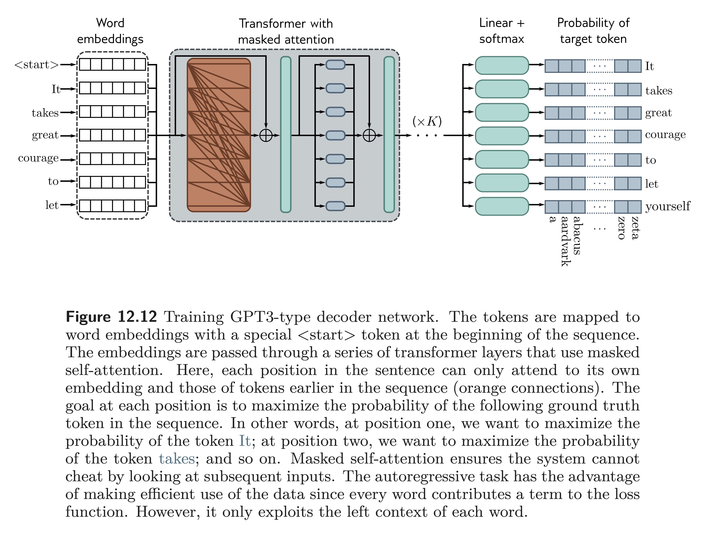
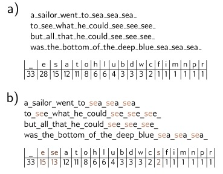
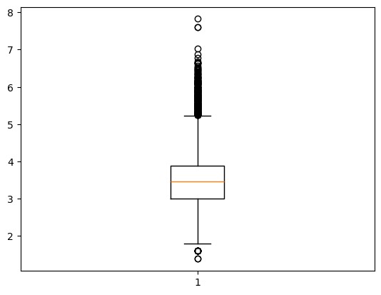

import torch
import torch.nn as nn
from torch.nn import functional as F
torch.manual_seed(1337)<torch._C.Generator at 0x10ca98490>In this lecture, we study:
Note: much of this code is from Andrej Karpathy’s excellent tutorials on building GPT from scratch:
<torch._C.Generator at 0x10ca98490>We are going to look at the Tiny Shakespeare dataset, which contains all the work of Shakespeare in a .txt file.
First Citizen:
Before we proceed any further, hear me speak.
All:
Speak, speak.
First Citizen:
You are all resolved rather to die than to famish?
All:
Resolved. resolved.
First Citizen:
First, you know Caius Marcius is chief enemy to the people.
All:
We know't, we know't.
First Citizen:
Let us kill him, and we'll have corn at our own price.
Is't a verdict?
All:
No more talking on't; let it # here are all the unique characters that occur in this text
chars = sorted(list(set(text)))
vocab_size = len(chars)
print(''.join(chars))
print(vocab_size)
!$&',-.3:;?ABCDEFGHIJKLMNOPQRSTUVWXYZabcdefghijklmnopqrstuvwxyz
65How do we represent Tiny Shakespeare as numerical values?
# create a mapping from characters to integers
stoi = { ch:i for i,ch in enumerate(chars) } # string to integer
itos = { i:ch for i,ch in enumerate(chars) } # integer to string
encode = lambda s: [stoi[c] for c in s] # encoder: take a string, output a list of integers
decode = lambda l: ''.join([itos[i] for i in l]) # decoder: take a list of integers, output a string
print(encode("hello there"))
print(decode(encode("hello there")))[46, 43, 50, 50, 53, 1, 58, 46, 43, 56, 43]
hello there# let's now encode the entire text dataset and store it into a torch.Tensor
import torch
data = torch.tensor(encode(text), dtype=torch.float)
print(data.shape, data.dtype)
print(data[:200]) torch.Size([1115393]) torch.float32
tensor([18., 47., 56., 57., 58., 1., 15., 47., 58., 47., 64., 43., 52., 10.,
0., 14., 43., 44., 53., 56., 43., 1., 61., 43., 1., 54., 56., 53.,
41., 43., 43., 42., 1., 39., 52., 63., 1., 44., 59., 56., 58., 46.,
43., 56., 6., 1., 46., 43., 39., 56., 1., 51., 43., 1., 57., 54.,
43., 39., 49., 8., 0., 0., 13., 50., 50., 10., 0., 31., 54., 43.,
39., 49., 6., 1., 57., 54., 43., 39., 49., 8., 0., 0., 18., 47.,
56., 57., 58., 1., 15., 47., 58., 47., 64., 43., 52., 10., 0., 37.,
53., 59., 1., 39., 56., 43., 1., 39., 50., 50., 1., 56., 43., 57.,
53., 50., 60., 43., 42., 1., 56., 39., 58., 46., 43., 56., 1., 58.,
53., 1., 42., 47., 43., 1., 58., 46., 39., 52., 1., 58., 53., 1.,
44., 39., 51., 47., 57., 46., 12., 0., 0., 13., 50., 50., 10., 0.,
30., 43., 57., 53., 50., 60., 43., 42., 8., 1., 56., 43., 57., 53.,
50., 60., 43., 42., 8., 0., 0., 18., 47., 56., 57., 58., 1., 15.,
47., 58., 47., 64., 43., 52., 10., 0., 18., 47., 56., 57., 58., 6.,
1., 63., 53., 59.])In language modeling, we want to predict the next word in a sequence. For a given block, what are we predicting?
x = train_data[:block_size]
y = train_data[1:block_size+1]
for t in range(block_size):
context = x[:t+1]
target = y[t]
print(f"when input is {context} the target: {target}")when input is tensor([18.]) the target: 47.0
when input is tensor([18., 47.]) the target: 56.0
when input is tensor([18., 47., 56.]) the target: 57.0
when input is tensor([18., 47., 56., 57.]) the target: 58.0
when input is tensor([18., 47., 56., 57., 58.]) the target: 1.0
when input is tensor([18., 47., 56., 57., 58., 1.]) the target: 15.0
when input is tensor([18., 47., 56., 57., 58., 1., 15.]) the target: 47.0
when input is tensor([18., 47., 56., 57., 58., 1., 15., 47.]) the target: 58.0batch_size = 4 # how many independent sequences will we process in parallel?
block_size = 8 # what is the maximum context length for predictions?
def get_batch(split):
# generate a small batch of data of inputs x and targets y
data = train_data if split == 'train' else val_data
ix = torch.randint(len(data) - block_size, (batch_size,)) # select a random integer from len(data) - block_size
x = torch.stack([data[i:i+block_size] for i in ix])
y = torch.stack([data[i+1:i+block_size+1] for i in ix])
return x, y
xb, yb = get_batch('train')
print('inputs:')
print(xb.shape)
print(xb)
print('targets:')
print(yb.shape)
print(yb)
print('----')
for b in range(2): # batch dimension
for t in range(block_size): # time dimension
context = xb[b, :t+1]
target = yb[b,t]
print(f"when input is {context.tolist()} the target: {target}")inputs:
torch.Size([4, 8])
tensor([[53., 59., 6., 1., 58., 56., 47., 40.],
[49., 43., 43., 54., 1., 47., 58., 1.],
[13., 52., 45., 43., 50., 53., 8., 0.],
[ 1., 39., 1., 46., 53., 59., 57., 43.]])
targets:
torch.Size([4, 8])
tensor([[59., 6., 1., 58., 56., 47., 40., 59.],
[43., 43., 54., 1., 47., 58., 1., 58.],
[52., 45., 43., 50., 53., 8., 0., 26.],
[39., 1., 46., 53., 59., 57., 43., 0.]])
----
when input is [53.0] the target: 59.0
when input is [53.0, 59.0] the target: 6.0
when input is [53.0, 59.0, 6.0] the target: 1.0
when input is [53.0, 59.0, 6.0, 1.0] the target: 58.0
when input is [53.0, 59.0, 6.0, 1.0, 58.0] the target: 56.0
when input is [53.0, 59.0, 6.0, 1.0, 58.0, 56.0] the target: 47.0
when input is [53.0, 59.0, 6.0, 1.0, 58.0, 56.0, 47.0] the target: 40.0
when input is [53.0, 59.0, 6.0, 1.0, 58.0, 56.0, 47.0, 40.0] the target: 59.0
when input is [49.0] the target: 43.0
when input is [49.0, 43.0] the target: 43.0
when input is [49.0, 43.0, 43.0] the target: 54.0
when input is [49.0, 43.0, 43.0, 54.0] the target: 1.0
when input is [49.0, 43.0, 43.0, 54.0, 1.0] the target: 47.0
when input is [49.0, 43.0, 43.0, 54.0, 1.0, 47.0] the target: 58.0
when input is [49.0, 43.0, 43.0, 54.0, 1.0, 47.0, 58.0] the target: 1.0
when input is [49.0, 43.0, 43.0, 54.0, 1.0, 47.0, 58.0, 1.0] the target: 58.0As discussed in class, attention is the weighted average of previous word embeddings:
h_T = \sum_{t=1}^T \alpha_t x_t
Let’s first write up the average (instead of weighted average). h_T = \frac{1}{T}\sum_{t=1}^T x_t
# consider the following toy example:
B,T,C = 4,8,2 # batch, time, channels
x = torch.randn(B,T,C)
x.shapetorch.Size([4, 8, 2])# version 2: using matrix multiply for a weighted aggregation
wei = torch.tril(torch.ones(T, T))
wei = wei / wei.sum(1, keepdim=True)
xrep2 = wei @ x # (B, T, T) @ (B, T, C) ----> (B, T, C)
torch.allclose(xrep, xrep2)True# version 3: use Softmax
tril = torch.tril(torch.ones(T, T))
wei = torch.zeros((T,T))
wei = wei.masked_fill(tril == 0, float('-inf'))
wei = F.softmax(wei, dim=-1)
xrep3 = wei @ x
torch.allclose(xrep, xrep3)Truetensor([[1.0000, 0.0000, 0.0000, 0.0000, 0.0000, 0.0000, 0.0000, 0.0000],
[0.5000, 0.5000, 0.0000, 0.0000, 0.0000, 0.0000, 0.0000, 0.0000],
[0.3333, 0.3333, 0.3333, 0.0000, 0.0000, 0.0000, 0.0000, 0.0000],
[0.2500, 0.2500, 0.2500, 0.2500, 0.0000, 0.0000, 0.0000, 0.0000],
[0.2000, 0.2000, 0.2000, 0.2000, 0.2000, 0.0000, 0.0000, 0.0000],
[0.1667, 0.1667, 0.1667, 0.1667, 0.1667, 0.1667, 0.0000, 0.0000],
[0.1429, 0.1429, 0.1429, 0.1429, 0.1429, 0.1429, 0.1429, 0.0000],
[0.1250, 0.1250, 0.1250, 0.1250, 0.1250, 0.1250, 0.1250, 0.1250]])# version 4: self-attention!
torch.manual_seed(1337)
B,T,C = 4,8,32 # batch, time, channels (channels is the embedding size)
x = torch.randn(B,T,C)
# let's see a single Head perform self-attention
head_size = 16
key = nn.Linear(C, head_size, bias=False) # W_K matrix
query = nn.Linear(C, head_size, bias=False) # W_Q matrix
value = nn.Linear(C, head_size, bias=False) # W_V matrix
k = key(x) # (B, T, 16) W_K x
q = query(x) # (B, T, 16) W_Q x
wei = q @ k.transpose(-2, -1) # (B, T, 16) @ (B, 16, T) ---> (B, T, T)
tril = torch.tril(torch.ones(T, T))
#wei = torch.zeros((T,T))
wei = wei.masked_fill(tril == 0, float('-inf')) # mask the weight matrix so that we can't pay attention to future tokens
wei = F.softmax(wei, dim=-1)
v = value(x)
out = wei @ v
#out = wei @ x
out.shapetorch.Size([4, 8, 16])For regularization and to stabilize training, layer norm is used (instead of batch norm). Layer norm is the same as batch norm, except averages are taken over the sequence of tokens, not the batches.
class LayerNorm1d:
def __init__(self, dim, eps=1e-5, momentum=0.1):
self.eps = eps
self.gamma = torch.ones(dim)
self.beta = torch.zeros(dim)
def __call__(self, x):
# calculate the forward pass
xmean = x.mean(1, keepdim=True) # sequence mean (in batch norm, axis=0 instead)
xvar = x.var(1, keepdim=True) # sequence variance (in batch norm, axis=0 instead)
xhat = (x - xmean) / torch.sqrt(xvar + self.eps) # normalize to unit variance
self.out = self.gamma * xhat + self.beta
return self.out
def parameters(self):
return [self.gamma, self.beta]
torch.manual_seed(1337)
module = LayerNorm1d(100)
x = torch.randn(32, 100) # batch size 32 of 100-dimensional vectors
x = module(x)
x.shapetorch.Size([32, 100])Here is a small GPT model from Andrej Karpathy.

Understanding Deep Learning (Prince), Figure 12.12Tokenization is the process of turning text into discrete units (called tokens). We saw we could map letters to numbers as we did with Tiny Shakespeare. However, this can be very inefficient.
Many modern tokenizers use an algorithm such as byte pair encoding that greedily merges commonly occurring sub-strings based on their frequency.
Understanding Deep Learning (Prince), Figure 12.8

TikTokenizer is a nice tool to see how LLMs encode text into tokens:
Tokenization is at the heart of much weirdness of LLMs.
127 + 456 = 583
Apple.
I have an apple.
apple.
Apple.
for i in range(1, 101):
if i % 2 == 0:
print("hello world")We now look at finetuning a language representation model called DistilBERT (Sanh et al. 2019) [arXiv].
DistilBERT is a 40% smaller, distilled version of BERT, which retains 97% of the original BERT model capabilities.
We can obtain pretrained models from Hugging Face.
We need to install Hugging Face’s transformers package:
Included also is the model tokenizer.
tokenizer = AutoTokenizer.from_pretrained('distilbert-base-uncased')
bert_model = AutoModel.from_pretrained("distilbert-base-uncased")
example_text = "Hello world"
token_res = tokenizer(example_text, return_tensors='pt', max_length=10, padding='max_length') # pt is for pytorch tensors
print(token_res['input_ids']) ## vector of token IDs
print(token_res['attention_mask']) ## vector of 0/1 to indicate real tokens vs padding tokens
out_text = tokenizer.decode(token_res['input_ids'][0])
print(out_text)tensor([[ 101, 7592, 2088, 102, 0, 0, 0, 0, 0, 0]])
tensor([[1, 1, 1, 1, 0, 0, 0, 0, 0, 0]])
[CLS] hello world [SEP] [PAD] [PAD] [PAD] [PAD] [PAD] [PAD]Let’s take a quick look at the outputs from the BERT model when we pass in the tokens for “Hello world”.
BaseModelOutput(last_hidden_state=tensor([[[-0.1698, -0.1662, 0.0256, ..., -0.1255, 0.1729, 0.4331],
[-0.4213, 0.1761, 0.4999, ..., -0.1429, 0.6527, 0.4612],
[-0.2182, -0.2248, 0.4035, ..., 0.0806, 0.1990, 0.0015],
...,
[-0.1641, -0.3085, 0.1660, ..., 0.2280, -0.0795, 0.2561],
[-0.2119, -0.3100, 0.1578, ..., 0.2355, -0.0540, 0.2553],
[-0.2495, -0.2573, 0.1870, ..., 0.1572, 0.0321, 0.3080]]],
grad_fn=<NativeLayerNormBackward0>), hidden_states=None, attentions=None)We can obtain the outputs by:
tensor([[[-0.1698, -0.1662, 0.0256, ..., -0.1255, 0.1729, 0.4331],
[-0.4213, 0.1761, 0.4999, ..., -0.1429, 0.6527, 0.4612],
[-0.2182, -0.2248, 0.4035, ..., 0.0806, 0.1990, 0.0015],
...,
[-0.1641, -0.3085, 0.1660, ..., 0.2280, -0.0795, 0.2561],
[-0.2119, -0.3100, 0.1578, ..., 0.2355, -0.0540, 0.2553],
[-0.2495, -0.2573, 0.1870, ..., 0.1572, 0.0321, 0.3080]]],
grad_fn=<NativeLayerNormBackward0>)Note: the output dim is 1 x 10 x 784.
This is in form: B x T x C
where
B - batch index
T - token index in sequence
C - token embedding dimension
To get the <CLS> token embedding, we get the first token position:
tensor([[-1.6980e-01, -1.6617e-01, 2.5641e-02, -1.4416e-01, -1.7714e-01,
-1.1194e-01, 2.6484e-01, 3.8515e-01, -1.8565e-01, -1.4696e-01,
6.2819e-02, -1.1120e-01, -2.6100e-01, 2.8811e-01, 4.4335e-02,
-1.9450e-02, -1.5031e-01, 3.6933e-01, 4.5059e-02, -2.3331e-01,
-1.1200e-01, -2.0923e-01, -6.7152e-02, -1.5642e-01, -2.1683e-02,
-1.1424e-01, -1.5132e-01, 5.1026e-02, 9.2604e-02, -9.0324e-02,
-1.5029e-01, 8.4501e-02, -5.0390e-02, -1.7435e-01, -1.0529e-02,
-1.1075e-03, -4.6397e-02, 6.6604e-03, -1.4287e-01, 6.2094e-02,
-1.5200e-01, -6.6328e-02, 1.7677e-01, -9.5258e-02, 5.1078e-02,
-3.1815e-01, -2.4632e+00, 8.2927e-02, -1.7671e-01, -2.1056e-01,
2.0229e-01, 2.1360e-03, 1.7705e-01, 3.4820e-01, 3.1395e-01,
2.2886e-01, -1.0460e-01, 3.6028e-01, -3.4775e-02, 2.3253e-02,
1.5761e-02, 3.1417e-02, -2.1091e-01, -1.2933e-01, 1.7772e-02,
1.6691e-01, 1.1484e-01, 3.3181e-01, -3.1637e-01, 3.4777e-01,
-7.9722e-02, -9.5210e-02, 1.4244e-01, -5.2855e-02, 4.1317e-02,
-4.9833e-02, 4.6352e-02, 2.8952e-01, -2.1621e-01, 8.6517e-02,
-2.6528e-01, 1.5474e-01, 3.7836e-01, 5.4268e-02, -4.8637e-05,
4.1670e-02, -1.3816e-01, -1.4291e-01, 2.5448e-01, 4.2162e-01,
-2.8367e-01, -1.5518e-01, -7.3213e-02, 2.1032e-01, 4.1404e-01,
-3.1157e-01, -2.3149e-01, 1.4709e-02, 1.3924e-01, 2.8672e-01,
8.1255e-02, -5.8751e-02, 7.8941e-02, -3.6586e-01, 2.5870e-02,
-1.0227e-01, -3.2648e-02, -2.8553e-01, 1.4374e-01, -2.6361e+00,
1.7203e-01, 1.7592e-01, -5.3812e-02, -3.2763e-01, -5.4671e-02,
4.2393e-01, 2.7462e-01, -9.1409e-03, -1.2121e-02, -8.6818e-03,
-3.3252e-02, 3.4321e-01, -2.6749e-02, -1.9999e-01, 9.1440e-02,
3.0282e-01, 1.0180e-01, 4.2031e-02, 1.8883e-01, 2.5073e-01,
2.3746e-01, 3.7270e-01, -4.5400e-02, -1.1386e-01, -2.3821e-01,
1.1817e-01, 2.9637e-01, 3.8181e-02, -3.3133e-01, 1.2780e-01,
-3.1906e-01, 3.6667e-02, -3.1727e+00, 2.2243e-01, 4.1155e-01,
1.4065e-01, -1.5976e-01, 5.0546e-02, -1.3601e-02, 1.4519e-01,
1.1486e-01, 9.6987e-02, -8.2532e-02, 6.7442e-02, -2.4828e-01,
1.0925e-01, -5.5219e-02, -6.2787e-02, 2.1931e-01, 1.3902e-01,
7.3347e-02, 1.4109e-02, -3.5104e-02, -5.9658e-02, -1.5558e-01,
2.9456e-01, 3.7544e-01, 2.8774e-01, 1.5048e-01, -9.4489e-02,
-1.1791e-01, -3.8034e-02, 2.8871e-01, 6.1569e-02, 1.2278e-01,
4.8966e-02, 3.3305e-01, 1.3006e-01, 1.5366e-03, -9.7047e-02,
-8.5352e-02, 1.8319e-01, 2.1381e-01, 2.3500e-01, 5.6564e-02,
8.9529e-02, 2.6824e-01, -5.1324e-02, 5.8676e-02, 3.7893e-01,
-1.1410e-01, -4.9758e-02, 9.5978e-02, 4.1501e-02, 1.6020e-01,
1.4933e-01, 7.2798e-02, -2.9716e-01, 1.8687e-01, 9.7411e-02,
-1.4321e-01, -1.0046e-01, -1.1656e-02, 4.7778e-02, -6.4078e-02,
3.6144e+00, 3.2567e-02, 5.7260e-03, 7.7276e-02, 2.0230e-01,
-2.1659e-01, 5.8792e-02, 1.5204e-02, -4.1648e-02, 2.3450e-01,
9.1593e-02, 2.6920e-01, -9.1826e-02, 5.1392e-02, -2.2799e-02,
1.7507e-01, 2.5707e-01, -1.5303e-02, 1.0617e-01, -1.4869e-02,
2.8716e-01, 1.4302e-01, 1.6361e-01, 1.0804e-01, -1.0520e+00,
7.6323e-02, -7.0572e-02, -6.4850e-02, 2.6686e-01, -3.3337e-01,
-4.6320e-02, 8.0033e-02, -1.0911e-01, 9.4279e-02, 8.0087e-02,
-1.5814e-01, 9.3137e-02, 2.1012e-01, 2.5305e-01, -1.3812e-01,
3.8014e-02, -4.5705e-03, -4.4719e-02, 1.0999e-01, 6.4217e-02,
2.8488e-01, -5.7680e-02, -3.4464e-02, -1.1506e-01, 4.4385e-02,
8.9765e-02, 1.2109e-01, 1.6297e-01, -3.1530e-01, 9.2613e-02,
-1.9462e-01, -7.4746e-02, 2.2955e-01, 1.1074e-01, -3.1348e-01,
-1.0766e-01, 9.3633e-02, -2.6649e-01, 1.5249e-01, -1.6524e-01,
-2.1183e-01, 6.1065e-03, -2.4842e-01, -3.9711e+00, 2.1235e-02,
-5.1896e-02, 1.9835e-01, 3.1498e-01, 5.3719e-02, -1.0793e-01,
1.0308e-01, 2.4318e-01, -3.3050e-01, 2.5200e-01, 1.7291e-01,
-1.4559e-01, 5.9972e-02, -3.3263e-01, 4.8547e-02, 1.6974e-01,
-1.5750e-01, -1.3324e-01, -2.6273e-01, 6.8198e-02, 3.5480e-01,
-2.1816e-01, 2.8507e-01, -3.0933e-02, -1.5597e-01, -7.8373e-02,
-2.1119e-01, -8.8053e-02, -1.4676e-01, -1.8005e-01, -2.3590e-01,
8.1619e-02, -3.0359e-02, -3.5123e-01, -2.0710e+00, -6.5599e-02,
7.2976e-02, -1.2091e-01, -6.2984e-02, -1.0183e-01, 3.3615e-01,
-1.3278e-01, -1.0094e-01, 6.3674e-03, 9.1206e-02, -4.8826e-02,
2.6548e-02, -2.5850e-02, 6.0952e-02, 3.9632e-02, 1.6697e-01,
-6.0026e-02, 8.2604e-02, 6.1091e-02, 1.1253e-01, 7.6941e-02,
-6.0334e-02, -1.0783e-01, -2.0744e-02, 3.2058e-01, -2.3122e-01,
-5.3586e-02, -1.1384e-01, -6.3249e-02, -6.0703e-02, -1.4034e-01,
1.4871e-02, -1.3320e-02, -3.5606e-01, -2.6447e-01, 2.0354e-01,
1.9157e-01, 4.0191e-01, 8.1818e-02, -1.4050e-01, 5.1470e-01,
2.2375e-01, 1.7821e-01, 5.3750e-01, -1.4887e-02, 2.8124e-02,
-1.4253e-01, -5.7315e-02, 2.4210e-01, -7.4088e-02, 6.8236e-03,
1.2275e+00, -1.5266e-01, 3.3176e-01, 2.1547e-02, 4.1434e-01,
1.3563e-01, 6.5899e-02, 3.2233e-02, 4.9309e-01, 4.2042e-02,
1.2086e-01, -2.0869e-01, 3.7101e-02, -3.8565e-01, -8.4312e-03,
-3.0805e-01, -9.0486e-02, 7.1709e-02, -1.8213e-01, 1.6408e-01,
-1.0924e-01, -8.7831e-01, -3.3939e-01, 4.7427e-02, -1.5963e-01,
-7.2837e-02, -6.3448e-02, -1.1880e-01, -2.6898e-01, -1.7270e-02,
1.2706e-03, 3.0345e-01, -2.3952e-01, -6.0235e-02, -1.5940e-01,
4.2891e-03, -3.5415e-01, 1.4956e-01, -1.4776e-01, 6.9945e-02,
1.4627e-01, 6.5106e-02, 8.5406e-02, 1.4219e-01, 3.1678e-01,
-7.6642e-01, 6.5052e-02, -2.2211e-01, 1.7424e-02, -1.3244e-01,
-1.0800e-01, -1.0571e-01, -9.8638e-02, -3.0063e-02, -3.1512e-01,
2.8641e-01, -8.0994e-02, 2.6901e-01, -2.7048e-02, 5.9877e-02,
-3.7219e-02, 2.3330e-02, 8.3703e-01, -1.4659e-01, 5.9552e-03,
3.9242e-01, 7.7466e-02, 2.5437e-01, 1.1563e-01, 1.4718e-01,
-6.1727e-02, 6.2071e-02, 9.9798e-02, -2.0438e-02, -4.1384e-02,
-1.3219e-01, -2.5922e-01, -4.3233e-02, 3.1454e-02, -1.1448e-01,
-8.8206e-02, -6.3056e-01, 4.4248e-02, -2.8843e-01, -1.1318e-01,
4.5350e-02, 3.5489e-01, 1.7879e-01, 1.3184e-01, 1.9993e-01,
-1.5517e-01, 3.9797e-01, -1.2840e-01, 3.8631e-01, 1.5514e-02,
-2.2008e-02, 7.4816e-02, 2.6146e-01, -1.3008e-01, -2.8716e-01,
1.7129e-01, -1.6730e-01, 1.5452e-01, 9.6940e-02, 5.0731e-02,
4.3809e-02, -1.6945e-01, -5.1038e-02, 2.7285e-01, 8.8617e-02,
-1.3263e+00, 2.9868e-01, 9.5985e-02, 1.2012e-01, 1.6230e-01,
-6.2325e-02, -1.3965e-01, 2.5668e-01, 1.1421e-01, 1.2290e-01,
4.4353e-02, 2.9408e-02, -1.8329e-01, 1.5838e-01, 6.2443e-02,
-1.6265e-01, 1.6651e-01, 1.2718e-01, 8.9298e-02, 1.0806e-01,
1.3615e-02, 4.4786e-01, 1.1108e-01, -1.1057e-01, 7.6064e-02,
-1.1941e-01, 4.2785e-02, 1.2606e-01, 7.4643e-03, 1.7022e-01,
1.1900e-01, -3.9793e-01, -6.2384e-01, -2.6092e-01, 3.3421e-01,
7.4784e-02, 2.8410e-03, 5.7255e-02, 8.5658e-02, 6.9021e-02,
-3.5292e-01, 2.2205e-01, 1.2112e-01, -1.0584e-01, 6.1638e-01,
8.9747e-02, -5.5699e-02, 3.5501e-01, 4.0438e-02, -2.5153e-01,
-2.6487e-02, -2.3468e-01, -9.9758e-02, -1.6808e-01, 5.2315e-02,
-2.3844e-02, -1.0456e-01, 5.3007e-03, -2.8766e-01, 1.7718e-01,
4.3789e-01, -2.2735e-01, -2.6130e-01, 1.5303e-01, -2.7203e-01,
-4.7781e-01, -1.9838e-01, -1.5926e-01, -2.8248e-02, 3.7150e-02,
3.7666e-01, 1.0769e-01, -2.0538e-01, 1.2141e-01, -3.8962e-01,
2.0673e-02, 3.8434e-02, 4.3338e-01, 2.2286e-01, -3.6920e-01,
1.4566e-01, -3.7548e-01, -1.5182e-01, 2.1670e-01, -9.7562e-02,
1.6903e-01, -8.1949e-03, -1.0469e-01, -8.1518e-02, 1.1576e-01,
-3.0603e-01, -2.5862e-01, 3.0952e-02, 6.4267e-02, 4.8802e-02,
-7.3578e-02, -1.6491e-01, -8.5461e-02, -7.3160e-02, -1.3840e-01,
-1.9011e-01, 3.1576e-01, 2.9340e-01, 2.4098e-01, 1.6048e-01,
2.2811e-01, 1.2957e-01, 1.6779e-01, -2.3585e-01, 7.0204e-02,
3.6124e-02, -1.6502e-02, -8.8606e-02, -1.6872e-02, 1.0942e-02,
-2.0800e-01, -2.2148e-01, -8.8342e-02, 2.0720e+00, 3.8816e-01,
2.0219e-02, -3.0711e-02, 3.1345e-01, -6.0987e-02, 7.6558e-02,
6.9924e-02, -2.8499e-02, 2.6316e-01, -1.8942e-01, 2.5457e-01,
-1.3899e-01, 3.7296e-01, 2.7573e-01, 2.1627e-01, -1.0550e-02,
-2.6032e-01, -4.2795e-01, -2.5650e-02, -2.4285e-01, 2.1587e-01,
3.3194e-01, 1.0731e-01, -6.5404e-02, 1.9875e-01, 7.0268e-02,
-1.2964e-01, -1.6576e-02, 8.5798e-02, -1.9504e-01, 5.1206e-02,
1.4621e-01, 3.8046e-01, -1.8293e-01, 9.6916e-02, 1.2488e-01,
-3.6824e-01, -2.4105e-01, -8.7655e-02, -1.4432e-02, -3.7876e-01,
2.4988e-01, 1.0066e-01, -3.2190e-02, 4.9490e-01, -1.0549e-01,
-3.4896e-01, 2.2764e-01, 1.8790e-01, -9.3385e-02, -5.5143e-02,
-1.4552e-01, 1.7688e-01, -1.6043e-01, -1.4702e-01, 7.8384e-02,
6.6615e-02, -1.3499e-01, 3.7949e-01, 3.7941e-02, 2.2464e-01,
1.4260e-01, -6.3970e-02, 1.9533e-01, 9.3362e-02, -2.0078e-01,
3.4551e-01, 1.2399e-01, -2.2437e-01, 8.6414e-02, 3.0002e-01,
2.2471e-01, 9.2132e-02, 1.7111e-01, -5.1775e-02, 2.9935e-01,
3.7684e-03, -7.4233e-02, -3.0271e+00, 1.0719e-02, -4.5934e-02,
1.8127e-01, 4.4485e-02, 4.3874e-01, 3.5430e-01, -1.3013e-01,
1.1594e-01, -1.2659e-01, 1.1945e-01, 2.0929e-01, 3.1704e-01,
1.1623e-01, 2.0273e-01, 6.5842e-02, 1.4238e-01, -2.1254e-01,
-8.0469e-02, -1.7375e-01, -2.9437e-02, 1.4645e-02, -1.9673e-02,
-2.4320e-01, -4.0141e-01, 1.9161e-02, -2.6064e-01, -3.0076e-01,
7.7529e-02, -3.9549e-02, -2.4286e-01, 4.6362e-01, -2.2725e-01,
3.2865e-02, 3.8445e-02, -1.7016e-01, -2.5844e-01, -1.4031e-01,
1.8749e-02, 1.7277e-01, -9.3401e-02, 5.0474e-01, -1.1512e-01,
1.0762e-01, -7.7085e-02, 4.6185e-03, 2.3484e-01, -2.1561e-01,
2.8244e-01, -2.0178e-01, 4.4855e-02, 1.9228e-01, 1.7624e-01,
5.5999e-02, -2.6431e-02, 1.6704e-02, 3.1605e-02, 6.8980e-02,
1.2067e-01, -2.5394e-01, 2.6287e-02, 4.2073e-02, -2.8866e-02,
1.5649e-01, 2.7765e-01, 3.1032e-03, -2.0410e-01, -1.2624e-01,
-5.6955e-02, -1.6014e-01, -1.5934e-01, -3.5215e-02, 2.4512e-01,
1.3925e-01, 1.0790e-01, -1.2747e-02, 4.0270e-01, 2.4502e-01,
1.1580e-01, 2.7372e-01, -6.9635e-02, -2.0478e-01, 7.5177e-02,
-4.8548e-02, 2.5665e-01, -8.2812e+00, -2.1377e-01, -1.5350e-01,
-1.9026e-01, -2.0888e-01, -4.0950e-01, 1.7238e-01, -2.3960e-01,
3.1540e-01, -1.7306e-01, 2.8494e-01, -1.2530e-02, -4.2447e-02,
-1.2552e-01, 1.7292e-01, 4.3305e-01]], grad_fn=<SliceBackward0>)We will finetune a wine dataset to predict price based on the wine description.
The dataset has 120K wines.
wine_df = pd.read_csv("data/wines.csv")
## keep only wines whose price is not NaN
wine_df = wine_df[wine_df['price'].notna()]
print(wine_df.shape)
## key variables: price, description
for i in range(3):
print("Description: ", wine_df['description'].iloc[i])
print("Price: ", wine_df['price'].iloc[i])
## find the wine with the highest price
max_price_idx = wine_df['price'].argmax()
print("Most expensive wine: ", wine_df['description'].iloc[max_price_idx])
print("Price: ", wine_df['price'].iloc[max_price_idx])
## make box-plot of prices
plt.boxplot(np.log(wine_df['price']))(28839, 59)
Description: Pineapple rind, lemon pith and orange blossom start off the aromas. The palate is a bit more opulent, with notes of honey-drizzled guava and mango giving way to a slightly astringent, semidry finish.
Price: 13
Description: Much like the regular bottling from 2012, this comes across as rather rough and tannic, with rustic, earthy, herbal characteristics. Nonetheless, if you think of it as a pleasantly unfussy country wine, it's a good companion to a hearty winter stew.
Price: 65
Description: Building on 150 years and six generations of winemaking tradition, the winery trends toward a leaner style, with the classic California buttercream aroma cut by tart green apple. In this good everyday sipping wine, flavors that range from pear to barely ripe pineapple prove approachable but not distinctive.
Price: 12
Most expensive wine: A superb wine from a great year, this is powerful and structured, with great acidity and solid, pronounced fruits. La Romanée is a small vineyard, wholly owned by Liger-Belair, next to Romanée-Conti. The wine is rich, spicy and very complex, with black fruits welling up from its depth. With great structure, it brings together opulent Pinot Noir fruits with firm, dense tannins with immense aging potential.
Price: 2500{'whiskers': [<matplotlib.lines.Line2D at 0x34b4282d0>,
<matplotlib.lines.Line2D at 0x34b428410>],
'caps': [<matplotlib.lines.Line2D at 0x34b428550>,
<matplotlib.lines.Line2D at 0x34b428690>],
'boxes': [<matplotlib.lines.Line2D at 0x34b2f8190>],
'medians': [<matplotlib.lines.Line2D at 0x34b4287d0>],
'fliers': [<matplotlib.lines.Line2D at 0x34b428910>],
'means': []}
class textClassDataset(torch.utils.data.Dataset):
def __init__(self, df, tokenizer, max_len):
self.tokenizer = tokenizer
self.max_len = max_len
self.tokens = tokenizer(df['description'].tolist(), return_tensors='pt', max_length=self.max_len,
padding='max_length', truncation=True)
self.price = torch.tensor(df['price'].to_numpy(), dtype=torch.float)
def __len__(self):
return len(self.price)
def __getitem__(self, idx):
input_ids = self.tokens['input_ids'][idx]
attention_mask = self.tokens['attention_mask'][idx]
price = self.price[idx]
return input_ids, attention_mask, pricedataset = textClassDataset(wine_df, tokenizer, 128)
## split into train and test datasets
train_size = int(0.5 * len(dataset))
test_size = len(dataset) - train_size
train_dataset, test_dataset = torch.utils.data.random_split(dataset, [train_size, test_size])
print("training data size: " + str(len(train_dataset)))
## create dataloaders
train_dataloader = torch.utils.data.DataLoader(train_dataset, batch_size=100, shuffle=True)training data size: 14419class BertRegressor(nn.Module):
def __init__(self):
super(BertRegressor, self).__init__()
self.bert = bert_model
## for distilbert-base-uncased, hidden_size is 768
self.layer1 = nn.Linear(self.bert.config.hidden_size, 1)
def forward(self, input_ids, attention_mask):
bert_outputs = self.bert(input_ids=input_ids, attention_mask=attention_mask)
pooled_output = bert_outputs[0][:, 0, :] # [CLS] token1 token2 ... this grabs [CLS] token
x = self.layer1(pooled_output)
x = x.squeeze(1)
return x
## We can freeze bert parameters so that we only update the
## prediction head
# for param in model.bert.parameters():
# param.requires_grad = False
loss_fn = nn.MSELoss()
optimizer = torch.optim.Adam(filter(lambda p: p.requires_grad, model.parameters()),
lr=1e-4)
num_epochs = 1
model.train()BertRegressor(
(bert): DistilBertModel(
(embeddings): Embeddings(
(word_embeddings): Embedding(30522, 768, padding_idx=0)
(position_embeddings): Embedding(512, 768)
(LayerNorm): LayerNorm((768,), eps=1e-12, elementwise_affine=True)
(dropout): Dropout(p=0.1, inplace=False)
)
(transformer): Transformer(
(layer): ModuleList(
(0-5): 6 x TransformerBlock(
(attention): DistilBertSdpaAttention(
(dropout): Dropout(p=0.1, inplace=False)
(q_lin): Linear(in_features=768, out_features=768, bias=True)
(k_lin): Linear(in_features=768, out_features=768, bias=True)
(v_lin): Linear(in_features=768, out_features=768, bias=True)
(out_lin): Linear(in_features=768, out_features=768, bias=True)
)
(sa_layer_norm): LayerNorm((768,), eps=1e-12, elementwise_affine=True)
(ffn): FFN(
(dropout): Dropout(p=0.1, inplace=False)
(lin1): Linear(in_features=768, out_features=3072, bias=True)
(lin2): Linear(in_features=3072, out_features=768, bias=True)
(activation): GELUActivation()
)
(output_layer_norm): LayerNorm((768,), eps=1e-12, elementwise_affine=True)
)
)
)
)
(layer1): Linear(in_features=768, out_features=1, bias=True)
)it = 0
for epoch in range(num_epochs):
for batch in train_dataloader:
input_ids = batch[0]
attention_mask = batch[1]
logprice = np.log(batch[2])
pred = model(input_ids, attention_mask)
loss = loss_fn(pred, logprice)
loss.backward()
optimizer.step()
optimizer.zero_grad()
it = it + 1
if (it % 100 == 0):
print("epoch: ", epoch, "sgd iter: " + str(it))
print("Epoch: {}, Loss: {}".format(epoch, loss.item()))/var/folders/f0/m7l23y8s7p3_0x04b3td9nyjr2hyc8/T/ipykernel_40714/1404685385.py:9: DeprecationWarning: __array_wrap__ must accept context and return_scalar arguments (positionally) in the future. (Deprecated NumPy 2.0)
logprice = np.log(batch[2])--------------------------------------------------------------------------- KeyboardInterrupt Traceback (most recent call last) Cell In[69], line 13 11 pred = model(input_ids, attention_mask) 12 loss = loss_fn(pred, logprice) ---> 13 loss.backward() 14 optimizer.step() 16 optimizer.zero_grad() File ~/anaconda3/envs/stat486/lib/python3.13/site-packages/torch/_tensor.py:647, in Tensor.backward(self, gradient, retain_graph, create_graph, inputs) 637 if has_torch_function_unary(self): 638 return handle_torch_function( 639 Tensor.backward, 640 (self,), (...) 645 inputs=inputs, 646 ) --> 647 torch.autograd.backward( 648 self, gradient, retain_graph, create_graph, inputs=inputs 649 ) File ~/anaconda3/envs/stat486/lib/python3.13/site-packages/torch/autograd/__init__.py:354, in backward(tensors, grad_tensors, retain_graph, create_graph, grad_variables, inputs) 349 retain_graph = create_graph 351 # The reason we repeat the same comment below is that 352 # some Python versions print out the first line of a multi-line function 353 # calls in the traceback and some print out the last line --> 354 _engine_run_backward( 355 tensors, 356 grad_tensors_, 357 retain_graph, 358 create_graph, 359 inputs_tuple, 360 allow_unreachable=True, 361 accumulate_grad=True, 362 ) File ~/anaconda3/envs/stat486/lib/python3.13/site-packages/torch/autograd/graph.py:829, in _engine_run_backward(t_outputs, *args, **kwargs) 827 unregister_hooks = _register_logging_hooks_on_whole_graph(t_outputs) 828 try: --> 829 return Variable._execution_engine.run_backward( # Calls into the C++ engine to run the backward pass 830 t_outputs, *args, **kwargs 831 ) # Calls into the C++ engine to run the backward pass 832 finally: 833 if attach_logging_hooks: KeyboardInterrupt:
<All keys matched successfully>## calculate testing error
## takes about 2 minutes to run
model.eval()
mse = 0
n_test = 600
y_test = np.array([np.log(test_dataset[i][2]) for i in range(n_test)])
for i in range(n_test):
pred = model(test_dataset[i][0].unsqueeze(0), test_dataset[i][1].unsqueeze(0))
mse = mse + (pred - y_test[i])**2
mse = mse / n_test
print("MSE:", mse.item(), " Test R-squared:", 1 - mse.item() / np.var(y_test))/var/folders/f0/m7l23y8s7p3_0x04b3td9nyjr2hyc8/T/ipykernel_40714/1264298161.py:9: DeprecationWarning: __array_wrap__ must accept context and return_scalar arguments (positionally) in the future. (Deprecated NumPy 2.0)
y_test = np.array([np.log(test_dataset[i][2]) for i in range(n_test)])MSE: 0.24994231760501862 Test R-squared: 0.3818257##
my_reviews = ["This white is both sour and bitter; it has a funny smell",
"the most amazing wine I have ever tasted",
"not bad at all; I would buy it again",
"actually quite bad; avoid if possible",
"great red and pretty cheap",
"great red but overpriced",
"great red and great price"]
for my_review in my_reviews:
token_res = tokenizer(my_review, return_tensors='pt')
pred = model(token_res['input_ids'], token_res['attention_mask'])
print("My Description:", my_review)
print("Predicted price: ", torch.exp(pred).item(), '\n')My Description: This white is both sour and bitter; it has a funny smell
Predicted price: 16.72062873840332
My Description: the most amazing wine I have ever tasted
Predicted price: 36.68758773803711
My Description: not bad at all; I would buy it again
Predicted price: 21.374027252197266
My Description: actually quite bad; avoid if possible
Predicted price: 21.181785583496094
My Description: great red and pretty cheap
Predicted price: 21.767562866210938
My Description: great red but overpriced
Predicted price: 29.636383056640625
My Description: great red and great price
Predicted price: 26.15469741821289